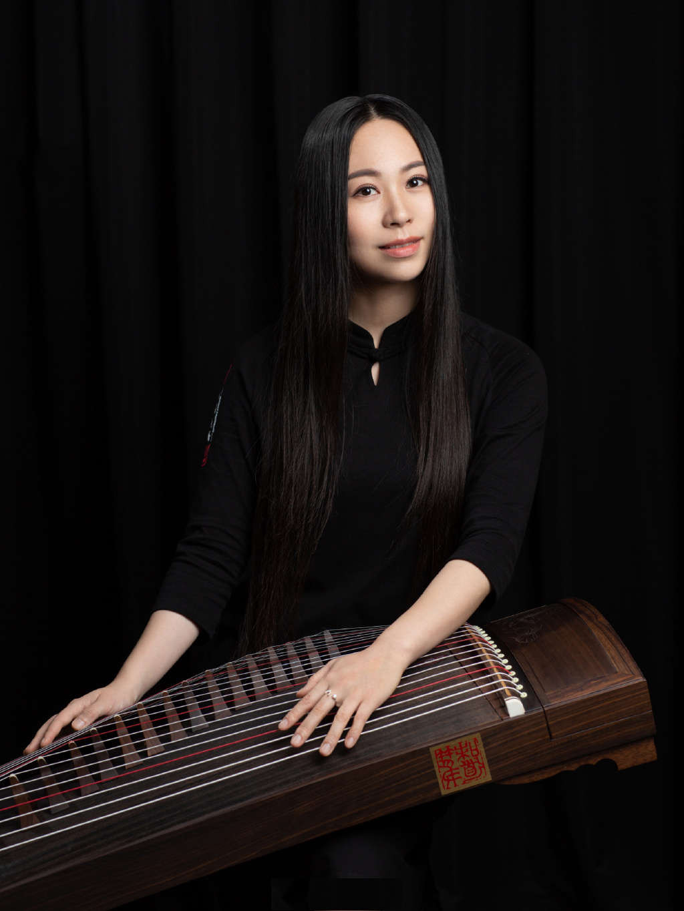
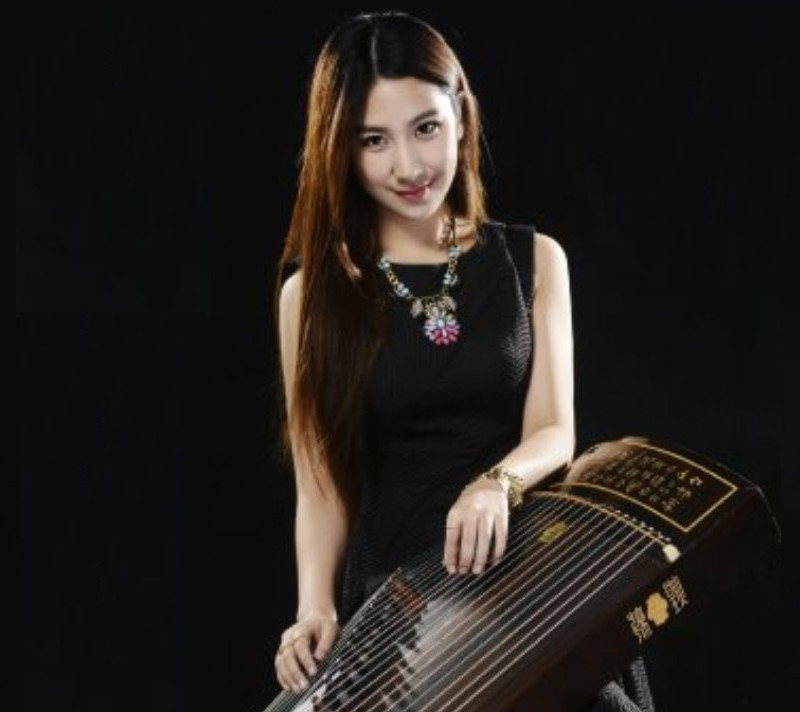
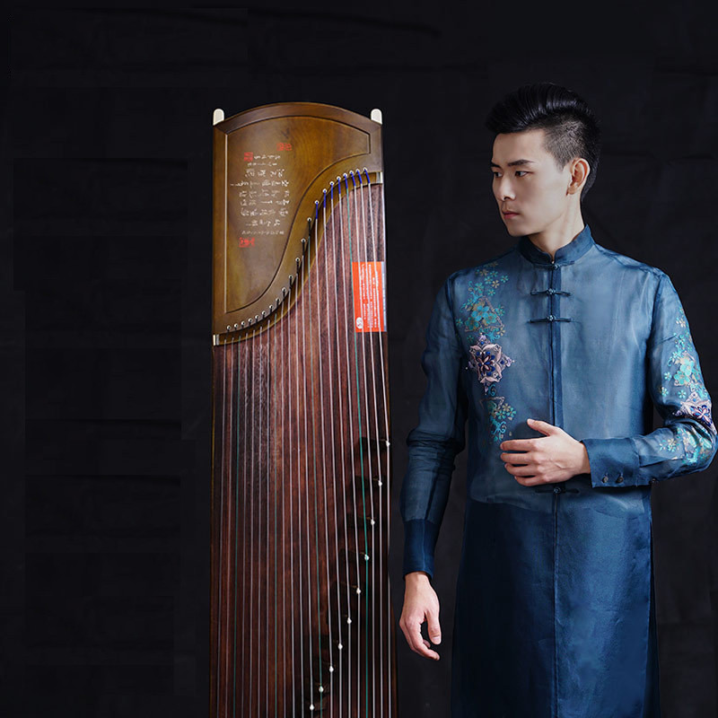

About Us
Zen Qin Master was founded in 2016 by three young Guzheng players Lee XuanZhi, Yuan Shan and Zhang WenYang. All of them graduated from the Guzhou Art School for Performing Arts. The group promotes traditional and modern Guzheng art music with a variety of interpretation techniques, as well as unify the practise of Qin and Zen.
The famous Guzheng players Lee Changyuan and Wang Lingzi are the music consultant of studio
Our Team
Lee XuanZhi
Guzheng Player and Course Director
- Since childhood, I has been enlightened by the Guzheng player Liu Xiaohong, and later with the teacher Woo Jingyi.
- In 2010, i was admitted to the Guzhou Art School for Performing Arts, with the national first-level performer Professor Xu Lingzi majoring in the Guzheng, I also had the guidance from the famous Guzheng artist Luo Jing.
- In 2012, I participated in the recording of the Guangdong Music Textbook-Guangdong Music Inherited,hosted by the Art School.
- In 2013, I was selected to perform the duo "Miao Shan Chun" in "Xu Lingzi's Works Concert" and was admitted to the "Guangzhou Chinese Orchestra Professional Internship Program" by the Guangzhou Chinese Orchestra.Then I got the Art Bachelor in 2014.
- In 2013-15, I participated in the tour of the community culture ambassador with Lee Changyuan Guzheng Art Troupe, a total of more than 10 concerts. In recent years, I have actively participated in teaching work, won the Outstanding Mentor Award of the 11th Guangzhou Chinese Culture and Arts Festival Classic Music Art Competition
- I founded the Zen Qin Master Guzheng Classroom in 2016, dedicated to cultivating more music lovers to feel the charms of Guzheng music.

Yuan Shan
Guzheng Player,Composer,Art Director and Guangzhou Art School tutor
- My guzheng career started when I was 6 years old. At the age of 12, I followed the China Welfare Society and Children’s Palace for the first time to visit Osaka, Tokyo in Japan and gave GuzhengPerformance.
- In 2010, i was admitted to the Guzhou Art School for Performing Arts.
- In July 2012, I attended the Carinthischer Sommer Festival in Austria and Saskatchewan on behalf of the Guangzhou Art School.
- In August 2013, I successfully held the "Liang Zhu • Zheng Qing" solo concert at the Guangzhou Grand Theatre.
- I graduated with a first class honours degree in 2014. In 2015, I collaborated with the famous conductor Qin Hui and the Guangzhou Performing Arts Orchestra on the Guzheng Concerto Xichu Bawang.
- In 2016, I entered the Composition Department of the Guangzhou Art School for Performing Arts.My work Guzheng solo "Ancient Spirit Murmurs" was selected in the Guangzhou Chinese Orchestra Heart Music Collection in 2017.
Zhang WenYang
Guzheng Player, Office Director
- From 1996 to 2002, I studied Guzheng with my father since childhood.
- From 2004 to 2008, I joined the Guangzhou Yuexiu District Youth String Orchestra.
- From 2010 to 2014, I was admitted to the GuangZhou Art School, and obtained a scholarship to study the Guzheng Elementary Music Course. My teacher are Zhou Lingzi, Prof. Xu Yanjia and Wei Shu. In the school period I joined the Guangzhou Art School Classic Orchestra.
- In 2015, I won the school Scholarship for my post graduated music course in Guangzhou Art School. I works with Professor Lee Changyuan to study the Guzheng music theory in Henan, Shandong and Hakka cultures.